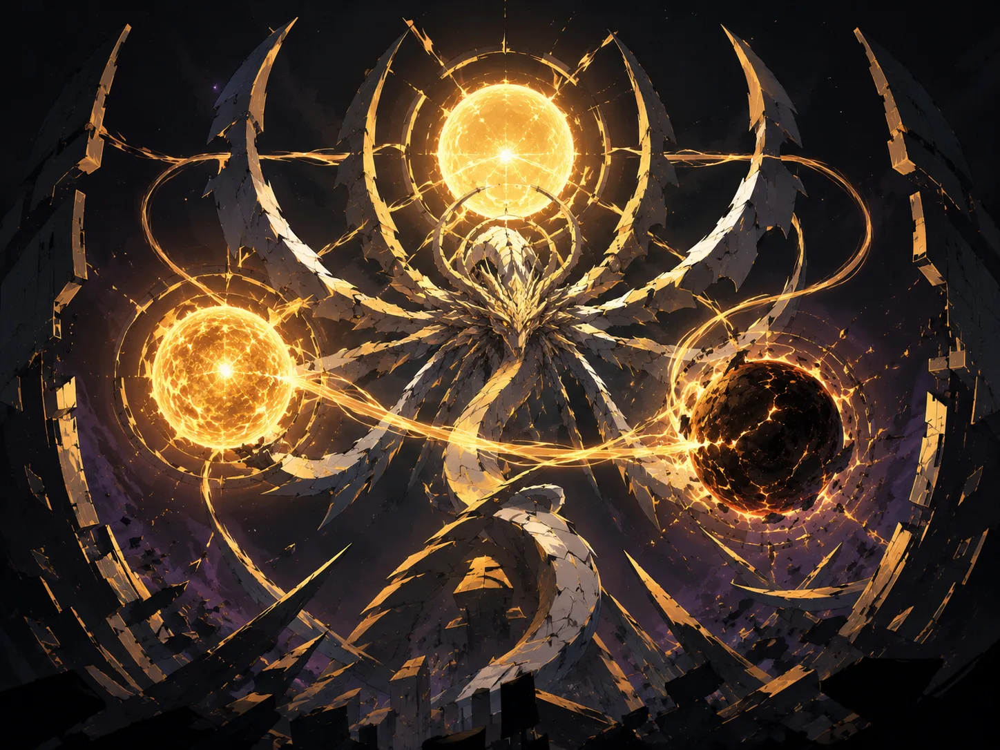

The universe executes the partition.
- Stable ID
starbinding- Structural type
- section
- Canon status
- unknown
- Spoiler level
- major
Published source content
Visual reference

Chronology lock
- Spire: Jazen enters Obsidian Armor and stellar data; Codec concludes the divine system cannot be reformed.
- Kail’s accidental star dive destroys his system; Torture holds him for roughly 256 years.
- Zentrum: Dao and Marcel crack Torture; Kail reforms mouthless with a black-hole throat and Tiger binds his speech through the starlight scarf.
- WorldsVault: Codec exposes thirty extinct-world templates, defeats Dao and Kail, kills NiAlBu and deletes reality’s deific checksum.
- Starbinding: billions of concurrent star dives collapse billions of stars; the stellar data becomes the material for the Partition.
- Reconstruction: Starsilk is inert inside the Partition; thirty templates seed data-born reconstructions.
- Decompilation: Codec repairs Kail, sends him through, then erases himself in the between-space rather than becoming a new sovereign.
Tiger’s realization
- The sky changes in a pattern Tiger first mistakes for his own Siege Wall grammar.
- There is no advancing front; the failures are synchronized. This is an instruction resolving across systems.
- Starsilk has been pulled from stellar centers: the stars are being accessed from within.
- Billions of recorded Codecs were not only camouflage; they were operating surfaces, each a star-knife hand.
- Tiger tries to read Codec’s heliocide as moral surrender into Tiger’s own logic, but the event refuses the interpretation because it creates no throne, worship, captive audience or suffering engine.
The two survivals
The pack preserves two exceptional systems: an empty system where Tiger destroyed one Codec recording and interrupted that macro-hand, and ruined Zentrum where Tiger remains. The latter is placement, not mercy: Tiger is left with ruins and no valid route into the future field of action.
Partition logic
Tiger does not encounter a stronger wall. The partition excludes him ontologically: there is no valid Tiger-state on the other side. The humiliation is that the future continues without needing to defeat, worship or even center him.
Codec cannot become the new throne
The pack explicitly refuses clean herohood. Codec engineers atrocity-scale universal heliocide and creates the partition, but cannot remain as sovereign of the world he opens. The future is not permitted to begin in supplication to its savior.
The future can be built from the dead. It can be built by the guilty. But it cannot be ruled by monsters.
Recursive sentence
“Your sky is built from your dead.”
The line recurs through Blood Rings, the Siege Wall, Starbinding, and the post-Wall Drakken civilization built from dead-Titan matter. Current canon still preserves death as final: stellar archival material is data, residue and structural memory, not an ongoing conscious afterlife.
Open future-law questions
- Notebook Program fate.
- Long-term political and ethical status of the thirty reconstructed WorldsVault template populations.
- Long-term political relationship between the Partition and the post-Mother Drakken civilization.
- Mother’s precise state after defeat.
- Blood Ring recovery ethics and inert-Starsilk rules.